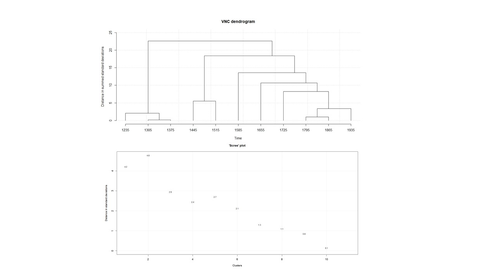
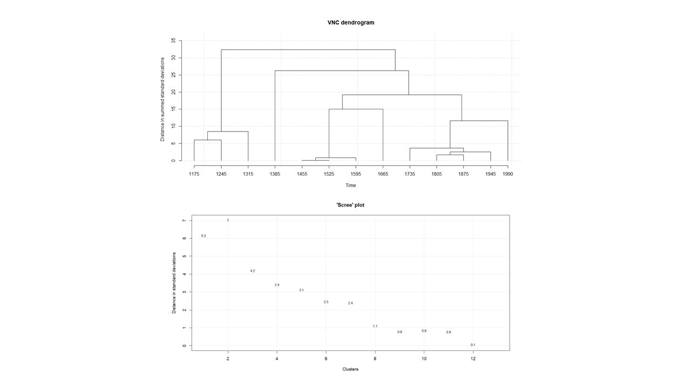
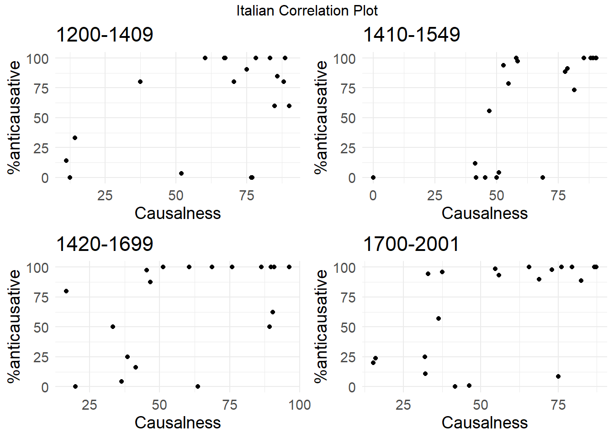
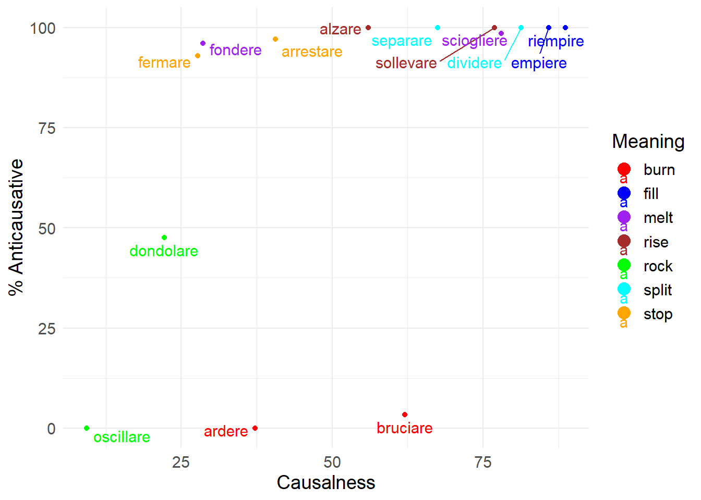
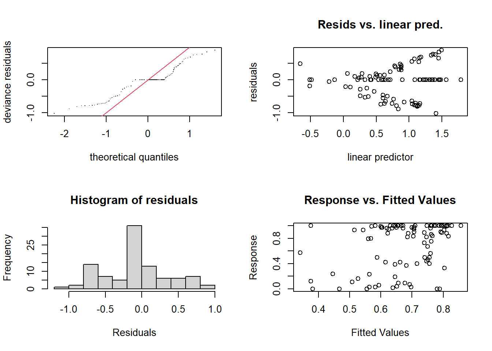
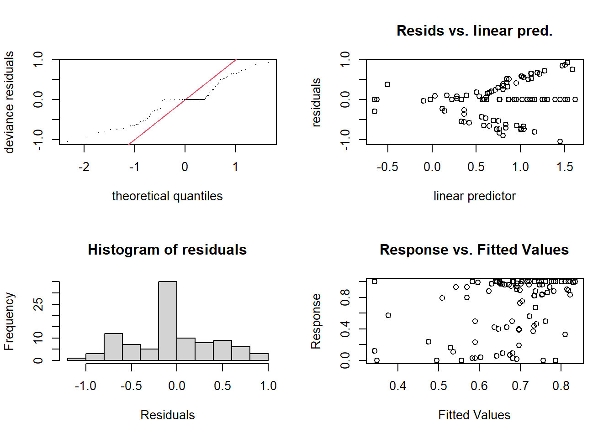
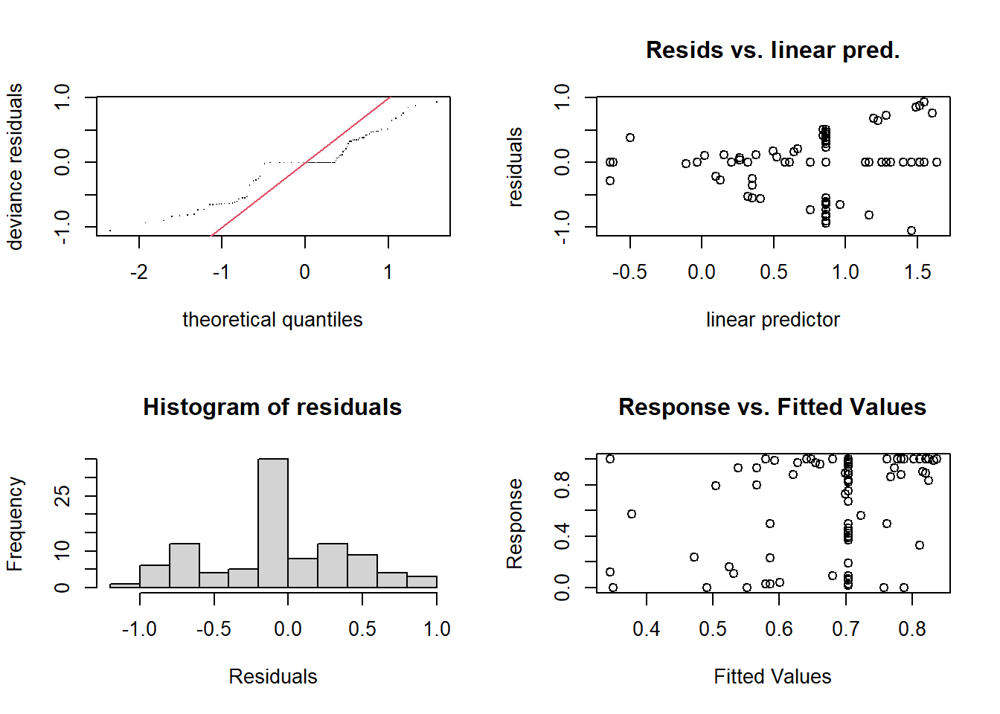

#| label: setup-packages
#| echo: false
#| message: false
#| warning: false
#| results: "hide"
packages <- c(
"tidyverse", "knitr", "data.table", "DT", "here", "kableExtra",
"lme4", "openxlsx", "readxl", "wesanderson", "stringr",
"itsadug", "mgcv", "report", "gratia", "ggrepel", "gridExtra"
)
installed_packages <- rownames(installed.packages())
to_install <- setdiff(packages, installed_packages)
if (length(to_install) > 0) {
suppressMessages(install.packages(to_install))
}
invisible(lapply(packages, function(pkg) {
suppressMessages(suppressWarnings(library(pkg, character.only = TRUE)))
}))
#Set working directory where this Rmd file lives
setwd(here::here())
# Load data
romall<-readxl::read_excel("romall_new_pub.xlsx")
nc<-readxl::read_excel("noncaus_new_pub.xlsx")Causalness, frequency, diachrony and the causal-noncausal alternation in Italian and Spanish
Anonymous submission to Corpus Linguistics and Linguistic Theory - April 2025
This work is submitted anoyimously together with the homonymous paper to the journal Corpus Linguistics and Linguistic Theory. Since it is unpublished work, the authors kindly ask whoever gets to consult these documents to treat them with the highest confidentiality, and to avoid sharing them or showing them to those who are not involved in the review.
Part I: Calculating the causalness degree over time
Cross-linguistic work on the causal-noncausal alternation has shown that there exists a strong correlation between the frequency of use of a given verb in causal vs. noncausal contexts and its preferred coding pattern for the alternation, with verbs typically occurring in causal contexts preferably selecting the anticausative pattern (Haspelmath et al. 2014). These findings rest upon the assumption that the correlation between frequency and coding is diachronic in nature, but this has so far not been tested on historical data.
Data for this study comes from diachronic corpora of Italian (MIDIA, D’Achille & Iacobini 2022) and Spanish (CDH, Real Academia Española 2013), from which the tokens of the 20 verb meanings used in Haspelmath et al. (2014) have been extracted and richly annotated. Each token has been classified according to whether it occurs in a causal or a noncausal context (following Haspelmath et al. 2014: 603, we considered passive, impersonal, reflexive, and reciprocal usages as causal) and based on the type of marking, that is, zero marking, marked anticausative (mainly with the reflexive marker si/se), or marked causative (regardless of the type of auxiliary verb, e.g., fare/hacer ‘make’, lasciare/dejar ‘let’, etc.).
Our dataset romall includes causal and noncausal observations. The subset nc only contains noncausal observations, and only includes “the variable contexts”, only verb lemma with alternation between zero and anticausative marking, since from a variationist point of view is important to only look at contexts where the variation actually occurs.
If we zoom in onto the panchronic percentage of noncausal usage of the verbs and plot them against the spontaneity scale (or causative prominence) proposed by Haspelmath (1993), we can observe that Italian and Spanish substantially behaves like other languages in the sample studied by Haspelmath et al. (2014). Although the data in the plot below displays the expected trend, the results may be problematic in that the percentage of noncausal usages has been calculated over the entire Italian and Spanish datasets. The problem is that, since the data comes from diachronic corpora, one cannot be sure of the accuracy of this measurement, as the causalness degree may in fact be variable over time.
## Script for Figure 2
result_noncaus_meaning <- romall %>%
group_by(language, meaning) %>%
summarise(noncaus = sum(semantics == 'noncaus') * 100 / n())
plot_noncaus_tot <- ggplot(result_noncaus_meaning, aes(x = meaning, y = noncaus, color = language, group = language)) +
geom_smooth(aes(y = noncaus, color = language), method = 'loess', se = FALSE) +
labs(y = "% noncausal usage", x = "Causative prominence") +
scale_color_manual(
values = c("italian" = "gray70", "spanish" = "gray20"),
labels = c("italian" = "Italian", "spanish" = "Spanish")) +
coord_cartesian(ylim = c(1, 100)) +
theme_minimal() +
theme(
panel.grid.major = element_blank(),
panel.grid.minor = element_blank(),
panel.background = element_rect(fill = "white", color = NA),
axis.text.x = element_text(angle = 90, vjust = 0.5, hjust=1) # Rotate x-axis labels
)
custom_order <- c("split", "close", "break", "open", "gather", "connect", "rock", "improve", "rise", "fill", "burn", "turn", "stop", "melt", "sink", "go out", "wake up", "dry", "boil")
plot_noncaus_tot <- plot_noncaus_tot + scale_x_discrete(limits = custom_order)
print(plot_noncaus_tot)
Overall purpose
We would like to include a new predictor in our dataset, namely the proportions of causal transitive uses (vs. non causal uses) of the verbs by time, which we define as causalness degree. In order to do so we need to come up with a periodisation for our data (spanning between 1140 and 2001), which allows to calculate the relative frequency of causal uses by time. To reach a periodisation, a visual survey of the data can be instructive, it might pose the problem of the analyst’s bias, as “different researchers may arrive at different groupings even for the same data set” (Gries & Hilpert 2008:2).
Variability neighbour clustering (VNC)
Gries & Hilpert (2008) propose a more accurate method to come up with meaningful periodisation for a given dataset: Variability-based Neighbor Clustering (VNC). It is similar to hierarchical cluster analysis (HCA), i.e. a method that displays a hierarchy of clusters, typically in the form of dendrograms with branches and leaves. Differently from HCA, VNC does justice to the chronological linearity of linguistic developments by not separating adjacent periods, and shows significant differences between periods based on the standard deviation, which is taken as similarity measure and averaging as amalgamation rule.
The analyst needs to input the proportions of a given variant (in our case, causal uses) for periods, ideally decades. The choice of the periods size is somewhat arbitrary, but making different attempts helps to find the right balance between data sparsity and significance of the VNC results. Because at various points in the diachrony of our dataset data are scarce (see Histogram), we started with periods of 20 years and ended up with periods of 70 years. The VNC periodisation based on periods of 70 years is the one with the best results in statistical terms, as the standard deviation measure for different periods are large enough to show significant differences. Hereby we show the procedure.
ggplot(romall, aes(x=year, fill=semantics)) +
geom_histogram(alpha = 0.5, position="stack") +
facet_wrap(~stringr::str_to_title(language))+
scale_fill_manual(labels=c("Causal", "Noncausal"), values= (c("#fc8961", "#b73779")))+ theme_minimal()
Establish the 70-years periodisation
- Step 1: Split the Italian and Spanish dataset.
# Step 1
esp <- filter(romall, language=="spanish")
ita <- filter(romall, language=="italian")The range of years in the italian dataset is 1200, 1968 and for Spanish 1140, 2001.
- Step 2: Create a new variable with the years groups in 70-years periods. Periods are indicated with the central years in the 70 years span, i.e. 1175 stands for the period between 1140 and 1210.
- Step 3: Create a table with proportions of causal and noncausal uses by 70-years periods
# Step 2
esp<-esp %>%
mutate(
period70_es=case_when(
year<1210 ~ "1175",
year<1280 ~ "1245",
year<1350 ~ "1315",
year<1420 ~ "1385",
year<1490 ~ "1455",
year<1560 ~ "1525",
year<1630 ~ "1595",
year<1700 ~ "1665",
year<1770 ~ "1735",
year<1840 ~ "1805",
year<1910 ~ "1875",
year<1980 ~ "1945",
year<=2001 ~ "1990"
)
)
ita<-ita %>%
mutate(
period70_ita=case_when(
year<1270 ~ "1235",
year<1340 ~ "1305",
year<1410 ~ "1375",
year<1480 ~ "1445",
year<1550 ~ "1515",
year<1620 ~ "1585",
year<1690 ~ "1655",
year<1760 ~ "1725",
year<1830 ~ "1795",
year<1900 ~ "1865",
year<1970 ~ "1935"
)
)
# Step 3
es_perctable70<-table(esp$period70_es,esp$semantics)
es_perctable70<-prop.table(es_perctable70,1)*100
es_perctable70<-as.data.frame(es_perctable70)
ita_perctable70<-table(ita$period70_ita,ita$semantics)
ita_perctable70<-prop.table(ita_perctable70,1)*100
ita_perctable70<-as.data.frame(ita_perctable70)Apply the Variability neighbour clustering (VNC)
Step 1: read the VNC instructions and download the VNC file at this link
Step 2: Rename the columns following the instructions from the website
Step 3: visualise input table for VNC and print it as a txt file
# Step 2
es_perctable70<-filter(es_perctable70, Var2== "caus") %>%
rename(year = Var1,input = Freq) %>%
select(year, input)
ita_perctable70<-filter(ita_perctable70, Var2== "caus") %>%
rename(year = Var1,input = Freq) %>%
select(year, input)
#round up the proportions
table_ita<-ita_perctable70
table_ita$input<-round(table_ita$input, digits = 1)
table_es<-es_perctable70
table_es$input<-round(table_es$input, digits = 1)
#Step 3
table_ita %>%
kbl(booktabs = TRUE, col.names = c("% Causal uses - Italian", paste0("70 years periods", footnote_marker_symbol(1))), escape = F, caption = "Input table for the VNC") %>%
kable_styling() %>%
footnote(symbol = "Periods are indicated with the central years in the 70 years span, i.e. 1175 stands for the period between 1140 and 1210")| % Causal uses - Italian | 70 years periods* |
|---|---|
| 1235 | 61.7 |
| 1305 | 63.7 |
| 1375 | 63.5 |
| 1445 | 70.6 |
| 1515 | 73.6 |
| 1585 | 67.5 |
| 1655 | 61.4 |
| 1725 | 66.7 |
| 1795 | 63.0 |
| 1865 | 61.8 |
| 1935 | 60.4 |
| * Periods are indicated with the central years in the 70 years span, i.e. 1175 stands for the period between 1140 and 1210 |
table_es %>%
kbl(booktabs = TRUE, col.names = c("% Causal uses - Spanish", paste0("70 years periods", footnote_marker_symbol(1))), escape = F, caption = "Input table for the VNC") %>%
kable_styling() %>%
footnote(symbol = "Periods are indicated with the central years in the 70 years span, i.e. 1175 stands for the period between 1140 and 1210")| % Causal uses - Spanish | 70 years periods* |
|---|---|
| 1175 | 57.1 |
| 1245 | 53.7 |
| 1315 | 58.5 |
| 1385 | 73.0 |
| 1455 | 56.5 |
| 1525 | 56.6 |
| 1595 | 55.2 |
| 1665 | 62.8 |
| 1735 | 49.6 |
| 1805 | 51.7 |
| 1875 | 50.5 |
| 1945 | 52.0 |
| 1990 | 57.6 |
| * Periods are indicated with the central years in the 70 years span, i.e. 1175 stands for the period between 1140 and 1210 |
setcolorder (table_es, c("input", "year"))
write.table(table_es, file = "esp_vnc_caus_70y_p.txt", sep = "\t", quote = FALSE, row.names = F)
setcolorder (table_ita, c("input", "year"))
write.table(table_ita, file = "ita_vnc_caus_70y_p.txt", sep = "\t", quote = FALSE, row.names = F)- Step 4: enter vnc.individual(file.choose()) and, when prompted to choose/enter a file name, choose/enter the path to the file with the data to be analyzed on the harddrive (e.g. newdata.txt). Run this in a separate R script and follow the instructions on the console.
#do not run
load("vnc.individual.RData")
vtxtnc.individual("esp_vnc_caus_70y_p.txt")
load("VNC/vnc.individual.RData")
vnc.individual("VNC/ita_vnc_caus_70y.txt")Running the previous script will generate two graphs in separate windows: a dendrogram and a screeplot of the type shown below.
The dendogram specifies how periods are clustered (the periods that are the most similar are amalgamated first). The analyst should asses how many development stages are considered relevant to the diachronic study. The screeplot produced by the VNC function allows the linguist to decide by comparing the distances between successive mergers (measured with standard deviations). Essentially, one should observe the slope from left to right, and take the number of clusters with the largest differences, until the slope is leveled off (i.e., until the difference between clusters is marginal). In this case 4 or 6 clusters seems adequate. Given that we want to minimise data sparsity, we make the most parsimonious choice and select the first 4 clusters.

 From the interpretation of the VNC results we end up with 4 significant periods for the development of the causal vs. non causal alternation in Spanish, dividing our dataset in the following periods: 1140-1209,1210-1279, 1280-1559, 1560-2001. Data are distributed across periods as summarised below. In Spanish causal uses are consistently higher than noncausal ones, but always below 60% except in the second period where they reach 73%.
esp<-esp %>%
mutate(
es_vnc70_apr25=case_when(
year<1350 ~ "1140-1349",
year<1420 ~ "1350-1419",
year<1700 ~ "1420-1699",
year<2002 ~ "1700-2001"
)
)
summary_es<-esp %>%
group_by (es_vnc70_apr25, semantics) %>%
summarise (n=n()) %>%
mutate(rel.freq = paste0(round(100 * n/sum(n), 0), "%"))
summary_es %>% kbl(booktabs = TRUE, col.names = c("VNC periods", "Semantics", "Count", "Relative Frequency (%)"), caption = "Spanish - Summary of the verb semantics by VNC periods") %>%
collapse_rows(column = 1) %>%
kable_styling() | VNC periods | Semantics | Count | Relative Frequency (%) |
|---|---|---|---|
| 1140-1349 | caus | 434 | 55% |
| noncaus | 348 | 45% | |
| 1350-1419 | caus | 92 | 73% |
| noncaus | 34 | 27% | |
| 1420-1699 | caus | 1367 | 57% |
| noncaus | 1044 | 43% | |
| 1700-2001 | caus | 1653 | 52% |
| noncaus | 1523 | 48% |
For Italian, the relevant 4 periods indicated by the dendogram are 1200-1409, 1410-1549, 1550-1619 and 1620-1968, Data are distributed across periods as summarised below. In Italian, causal uses are consistently more frequent than non causal ones, always higher than 60%. Their relative frequency is at the highest in the second period, when they reach 73%, like in Spanish. However, the second VNC period in Italian is about a century later than in Spanish.
ita<-ita %>%
mutate(
ita_vnc70_apr25=case_when(
year<1410 ~ "1200-1409",
year<1550 ~ "1410-1549",
year<1620 ~ "1550-1619",
year<=1970 ~ "1620-1968"
)
)
summary_ita<-ita %>%
group_by (ita_vnc70_apr25, semantics) %>%
summarise (n=n()) %>%
mutate(rel.freq = paste0(round(100 * n/sum(n), 0), "%"))
summary_ita %>% kbl(booktabs = TRUE, col.names = c("VNC periods", "Semantics", "Count", "Relative Frequency (%)"), caption = "Italian - Summary of the verb semantics by VNC periods") %>%
collapse_rows(column = 1) %>%
kable_styling() | VNC periods | Semantics | Count | Relative Frequency (%) |
|---|---|---|---|
| 1200-1409 | caus | 768 | 64% |
| noncaus | 441 | 36% | |
| 1410-1549 | caus | 1135 | 73% |
| noncaus | 421 | 27% | |
| 1550-1619 | caus | 695 | 67% |
| noncaus | 335 | 33% | |
| 1620-1968 | caus | 2700 | 62% |
| noncaus | 1635 | 38% |
Calculate the Causalness Degree
Once we found out the significant periods for the causal/non causal alternation, we calculate the share of causal uses by verb lemma and by period. Namely, every verb lemma in each of the four periods is assigned a number between 0 and 1, indicating the proportion (%) of causal uses vs. non causal uses. The table below summarises the distribution of causal uses by lemma and period (variable caus_use).
Italian:
caus_use_ita<-ita %>%
group_by (ita_vnc70_apr25, lemma, semantics) %>%
summarise (n=n()) %>%
mutate(caus_use_ita_apr25 = n/sum(n))
caus_use_ita<-caus_use_ita %>% filter(semantics=="caus") %>% ungroup() %>% select (-semantics)
caus_use_ita %>% DT::datatable(rownames=F, filter="top")Spanish:
caus_use_es <-esp %>%
group_by (es_vnc70_apr25, lemma, semantics) %>%
summarise (n=n()) %>%
mutate(caus_use_es_apr25 = n/sum(n))
caus_use_es<-caus_use_es %>% filter(semantics=="caus") %>% ungroup() %>% select (-semantics)
caus_use_es %>% DT::datatable(rownames=F, filter="top")And finally rejoin the individual languages new information (period70, vnc and causalness degree) to the main dataset:
# 1. Join caus_use_ita to ita by vnc and lemma
ita <- ita %>%
left_join(caus_use_ita, by = c("ita_vnc70_apr25" = "ita_vnc70_apr25", "lemma" = "lemma"))
# 2. Join caus_use_es to esp by vnc and lemma
esp <- esp %>%
left_join(caus_use_es, by = c("es_vnc70_apr25" = "es_vnc70_apr25", "lemma" = "lemma"))
# 3. Rename columns to match target names before merging into romall
ita <- ita %>%
rename(
vnc_period_apr25 = ita_vnc70_apr25,
causalness_degree_apr25 = caus_use_ita_apr25
)
esp <- esp %>%
rename(
vnc_period_apr25 = es_vnc70_apr25,
causalness_degree_apr25 = caus_use_es_apr25
)
# 4. Bind the two enriched subsets together
combined <- bind_rows(ita, esp)
# 5. Join back to romall by id and lemma
romall <- romall %>%
left_join(combined %>% select(id, lemma, vnc_period_apr25, causalness_degree_apr25),
by = c("id", "lemma"))
nc <- nc %>%
left_join(combined %>% select(id, lemma, vnc_period_apr25, causalness_degree_apr25),
by = c("id", "lemma"))#only run this if you want to save the results of the VNC in a new xlsx file
openxlsx::write.xlsx(romall, "romall_new_VNC.xlsx")
openxlsx::write.xlsx(nc, "noncaus_new_VNC.xlsx")Diachronic analysis of the noncausal usage and causalness degree correlation
After calculating the diachronic causalness degree, we follow the procedure outlined in Heidinger (2015). For each verb in the two languages, we measure its correlation with the percentage of anticausative marking, iterating the count separately for each of the four periods. The results are shown in Figure 6 and Figure 7:
##Calculate causalness degree by language and period
caus_degree_ita <- romall %>%
filter (language == 'italian') %>%
group_by(meaning, vnc_period_apr25) %>%
summarise(caus_degree = sum(semantics == 'caus') * 100 / n())
caus_degree_es <- romall %>%
filter (language == 'spanish') %>%
group_by(meaning, vnc_period_apr25) %>%
summarise(caus_degree = sum(semantics == 'caus') * 100 / n())
##Calculate percentage of anticausative marking by language and period
coding_percentages_ita <- romall %>%
group_by(meaning, semantics, coding, vnc_period_apr25) %>%
filter (language == 'italian') %>%
summarise(count = n()) %>%
spread(coding, count, fill = 0) %>%
mutate(caus_degree_vs_zero = caus * 100 / (caus + zero),
prop_antic_vs_zero = antic * 100 / (antic + zero))
coding_percentages_es <- romall %>%
group_by(meaning, semantics, coding, vnc_period_apr25) %>%
filter (language == 'spanish') %>%
summarise(count = n()) %>%
spread(coding, count, fill = 0) %>%
mutate(caus_degree_vs_zero = caus * 100 / (caus + zero),
prop_antic_vs_zero = antic * 100 / (antic + zero))
##Scatter Plot of correlations between causalness degree and anticausative marking by period and language
merged_data_ita <- merge(caus_degree_ita, coding_percentages_ita, by = c("meaning", "vnc_period_apr25"))
merged_data_ita_noncaus <- merged_data_ita %>%
filter(semantics == 'noncaus')
merged_data_ita_noncaus_1 <- merged_data_ita_noncaus %>%
filter(vnc_period_apr25 == '1200-1409')
merged_data_ita_noncaus_2 <- merged_data_ita_noncaus %>%
filter(vnc_period_apr25 == '1410-1549')
merged_data_ita_noncaus_3 <- merged_data_ita_noncaus %>%
filter(vnc_period_apr25 == '1550-1619')
merged_data_ita_noncaus_4 <- merged_data_ita_noncaus %>%
filter(vnc_period_apr25 == '1620-1968')
merged_data_es <- merge(caus_degree_es, coding_percentages_es, by = c("meaning", "vnc_period_apr25"))
merged_data_es_noncaus <- merged_data_es %>%
filter(semantics == 'noncaus')
merged_data_es_noncaus_1 <- merged_data_es_noncaus %>%
filter(vnc_period_apr25 == '1140-1349')
merged_data_es_noncaus_2 <- merged_data_es_noncaus %>%
filter(vnc_period_apr25 == '1350-1419')
merged_data_es_noncaus_3 <- merged_data_es_noncaus %>%
filter(vnc_period_apr25 == '1420-1699')
merged_data_es_noncaus_4 <- merged_data_es_noncaus %>%
filter(vnc_period_apr25 == '1700-2001')
plot_ita_1 <- ggplot(merged_data_ita_noncaus_1, aes(x = caus_degree, y = prop_antic_vs_zero, label = meaning)) +
geom_point() +
labs(x = "Causalness",
y = "%anticausative", title = "1200-1409") +
theme_minimal() +
theme(text = element_text(size = 14))
plot_ita_2 <- ggplot(merged_data_ita_noncaus_2, aes(x = caus_degree, y = prop_antic_vs_zero, label = meaning)) +
geom_point() +
labs(x = "Causalness",
y = "%anticausative", title = "1410-1549") +
theme_minimal() +
theme(text = element_text(size = 14))
plot_ita_3 <- ggplot(merged_data_ita_noncaus_3, aes(x = caus_degree, y = prop_antic_vs_zero, label = meaning)) +
geom_point() +
labs(x = "Causalness",
y = "%anticausative", title = "1420-1699") +
theme_minimal() +
theme(text = element_text(size = 14))
plot_ita_4 <- ggplot(merged_data_ita_noncaus_4, aes(x = caus_degree, y = prop_antic_vs_zero, label = meaning)) +
geom_point() +
labs(x = "Causalness",
y = "%anticausative", title = "1700-2001") +
theme_minimal() +
theme(text = element_text(size = 14))
library(gridExtra)
grid.arrange(plot_ita_1, plot_ita_2, plot_ita_3, plot_ita_4, nrow = 2, ncol = 2, top = "Italian Correlation Plot")
##Script for Figure 7
plot_es_1 <- ggplot(merged_data_es_noncaus_1, aes(x = caus_degree, y = prop_antic_vs_zero, label = meaning)) +
geom_point() +
labs(x = "Causalness",
y = "%anticausative", title = "1140-1349") +
theme_minimal() +
theme(text = element_text(size = 14))
plot_es_2 <- ggplot(merged_data_es_noncaus_2, aes(x = caus_degree, y = prop_antic_vs_zero, label = meaning)) +
geom_point() +
labs(x = "Causalness",
y = "%anticausative", title = "1350-1419") +
theme_minimal() +
theme(text = element_text(size = 14))
plot_es_3 <- ggplot(merged_data_es_noncaus_3, aes(x = caus_degree, y = prop_antic_vs_zero, label = meaning)) +
geom_point() +
labs(x = "Causalness",
y = "%anticausative", title = "1420-1699") +
theme_minimal() +
theme(text = element_text(size = 14))
plot_es_4 <- ggplot(merged_data_es_noncaus_4, aes(x = caus_degree, y = prop_antic_vs_zero, label = meaning)) +
geom_point() +
labs(x = "Causalness",
y = "%anticausative", title = "1700-2001") +
theme_minimal() +
theme(text = element_text(size = 14))
library(gridExtra)
grid.arrange(plot_es_1, plot_es_2, plot_es_3, plot_es_4, nrow = 2, ncol = 2, top = "Spanish Correlation Plot")
The corresponding correlation measures (Spearman Correlation Coefficient, SCC), alongside with p-values and the number of tokens analyzed for each period are given in the tables below:
## Function to format the p-values
format_pval <- function(p) {
case_when(
p < 0.001 ~ "< 0.001***",
p < 0.01 ~ "< 0.01**",
p < 0.05 ~ "< 0.05*",
TRUE ~ paste0("= ", round(p, 2))
)
}
# Italian
## Individual periods datasets for Italian
datasets <- list(
Period1 = merged_data_ita_noncaus_1,
Period2 = merged_data_ita_noncaus_2,
Period3 = merged_data_ita_noncaus_3,
Period4 = merged_data_ita_noncaus_4
)
## Make a dataframe with the Spearman correlation and p-values
cor_table_ita <- purrr::imap_dfr(datasets, function(df, period) {
test_result <- cor.test(df$caus_degree, df$prop_antic_vs_zero, method = "spearman", exact = FALSE)
tibble(
Period = period,
Spearman_Correlation = round(test_result$estimate, 2),
P_value = format_pval(test_result$p.value)
)
})
## Show with kableExtra
cor_table_ita %>%
kable("html", caption = "Italian - Spearman Correlation Between Causalness Degree and Anticausative Usage by Period") %>%
kable_styling(full_width = FALSE, bootstrap_options = c("striped", "hover", "condensed"))| Period | Spearman_Correlation | P_value |
|---|---|---|
| Period1 | 0.28 | = 0.24 |
| Period2 | 0.79 | < 0.001*** |
| Period3 | 0.58 | < 0.01** |
| Period4 | 0.59 | < 0.01** |
# Spanish
## Individual periods datasets for Italian
datasets_es <- list(
Period1 = merged_data_es_noncaus_1,
Period2 = merged_data_es_noncaus_2,
Period3 = merged_data_es_noncaus_3,
Period4 = merged_data_es_noncaus_4
)
## Make a dataframe with the Spearman correlation and p-values
cor_table_es <- purrr::imap_dfr(datasets_es, function(df, period) {
test_result <- cor.test(df$caus_degree, df$prop_antic_vs_zero, method = "spearman", exact = FALSE)
tibble(
Period = period,
Spearman_Correlation = round(test_result$estimate, 2),
P_value = format_pval(test_result$p.value)
)
})
## Show with KableExtra
cor_table_es %>%
kable("html", caption = "Spearman Correlation Between Causalness and Anticausative Usage by Period (Spanish)") %>%
kable_styling(full_width = FALSE, bootstrap_options = c("striped", "hover", "condensed"))| Period | Spearman_Correlation | P_value |
|---|---|---|
| Period1 | 0.36 | = 0.22 |
| Period2 | 0.43 | = 0.19 |
| Period3 | 0.04 | = 0.88 |
| Period4 | 0.15 | = 0.52 |
Lexical or semantic effects?
The correlations discussed above are based on verb meaning, but we maintain that it is important to also discuss lemma-effects.
In particular, if the degree of causalness were a direct consequence of the degree of spontaneity of the event (Heidinger 2015), we would expect verbs that lexicalize the same event (and therefore presumably share the same degree of spontaneity) to have substantially the same causalness degree. We have verified whether this is the case by looking at the Italian data for period IV.
# Step 1: Calculate causal degree for Italian lemmas
caus_degree_ita_lemma <- romall %>%
filter(language == "italian") %>%
group_by(lemma, vnc_period_apr25) %>%
summarise(caus_degree = sum(semantics == "caus") * 100 / n(), .groups = "drop")
# Step 2: Calculate coding percentages
coding_percentages_ita_lemma <- romall %>%
filter(language == "italian") %>%
group_by(lemma, semantics, coding, vnc_period_apr25) %>%
summarise(count = n(), .groups = "drop") %>%
pivot_wider(names_from = coding, values_from = count, values_fill = 0) %>%
mutate(
caus_degree_vs_zero = caus * 100 / (caus + zero),
caus_degree_vs_zero = antic * 100 / (antic + zero)
)
# Step 3: Merge the datasets
merged_data_ita_lemma <- left_join(
caus_degree_ita_lemma,
coding_percentages_ita_lemma,
by = c("lemma", "vnc_period_apr25")
)
# Step 4: Filter for noncausative semantics and specific time period
merged_data_ita_noncaus_4_lemma <- merged_data_ita_lemma %>%
filter(semantics == "noncaus", vnc_period_apr25 == "1620-1968")
# Step 5: Create verb meaning groups
groupings <- list(
burn = c("ardere", "bruciare"),
fill = c("empiere", "riempire"),
melt = c("sciogliere", "fondere"),
rise = c("alzare", "sollevare"),
rock = c("dondolare", "oscillare"),
split = c("dividere", "separare"),
stop = c("arrestare", "fermare")
)
# Assign group labels
merged_data_ita_noncaus_4_lemma <- merged_data_ita_noncaus_4_lemma %>%
mutate(group = map_chr(lemma, function(l) {
matched_group <- names(keep(groupings, ~ l %in% .x))
if (length(matched_group) > 0) matched_group else NA_character_
})) %>%
filter(!is.na(group)) %>%
mutate(group = factor(group, levels = names(groupings)))
# Step 6: Plot
ggplot(merged_data_ita_noncaus_4_lemma, aes(
x = caus_degree,
y = caus_degree_vs_zero,
label = lemma,
color = group,
fill = group
)) +
geom_point() +
geom_text_repel(
data = merged_data_ita_noncaus_4_lemma %>%
filter(lemma %in% unlist(groupings)),
aes(color = group),
hjust = 0.5,
vjust = -0.5,
size = 4
) +
labs(
x = "Causalness",
y = "% Anticausative"
) +
theme_minimal() +
theme(text = element_text(size = 14)) +
scale_color_manual(
name = "Meaning",
values = c(
burn = "red", fill = "blue", melt = "purple", rise = "brown",
rock = "green", split = "cyan", stop = "orange"
)
) +
scale_fill_manual(
name = "Meaning",
values = c(
burn = "red", fill = "blue", melt = "purple", rise = "brown",
rock = "green", split = "cyan", stop = "orange"
)
) +
guides(color = guide_legend(override.aes = list(shape = 16, size = 4)))
Part II: Frequency effects of causal degree on anticausative marking over time
# only non causal, verbs with categorical selection removed
ita_nc<-nc %>% filter(language=="italian")
es_nc<-nc %>% filter(language=="spanish")
ita_nc<-ita_nc %>% select(id, coding, meaning, lemma, vnc_period_apr25, causalness_degree_apr25)
ita_nc<-ita_nc %>% rename(period=vnc_period_apr25, causalness_degree=causalness_degree_apr25)
es_nc<-es_nc %>% select(id, coding, meaning, lemma, vnc_period_apr25, causalness_degree_apr25)
es_nc<-es_nc %>% rename(period=vnc_period_apr25, causalness_degree=causalness_degree_apr25)Italian data: prepare for Beta Regression
Subset the Italian data to obtain unique combinations of lemma and period.
- Step 1: Aggregate data to calculate the proportion of anticausative codings
ita_agg <- ita_nc %>%
group_by(lemma, period) %>%
summarise(
anticausative_count = sum(coding == "antic"),
total_count = n(),
proportion_anticausative = anticausative_count / total_count,
causalness_degree = first(causalness_degree),
) %>%
ungroup()- Step 2: Create a lagged causalness_degree variable
ita_agg <- ita_agg %>%
arrange(lemma, period) %>%
group_by(lemma) %>%
mutate(causalness_lagged = lag(causalness_degree)) %>%
ungroup() %>%
# Remove rows without previous causalness_degree (period 1)
filter(!is.na(causalness_lagged))- Step 3: Adjust proportions slightly to avoid exact 0 and 1
ita_agg <- ita_agg %>%
mutate(proportion_adj = (proportion_anticausative * (total_count - 1) + 0.5) / total_count)
ita_agg<-ita_agg %>%
filter(!is.na(proportion_adj), !is.na(causalness_lagged))
ita_agg <- ita_agg %>%
mutate(across(5:8, ~ round(.x, 2))) Spanish data: prepare for Beta Regression
Subset the Spanish data to obtain unique combinations of lemma and period.
- Step 1: Aggregate data to calculate the proportion of anticausative codings:
es_agg <- es_nc %>%
group_by(lemma, period) %>%
summarise(
anticausative_count = sum(coding == "antic"),
total_count = n(),
proportion_anticausative = anticausative_count / total_count,
causalness_degree = first(causalness_degree),
) %>%
ungroup()- Step 2: Create a lagged causalness_degree variable:
es_agg <- es_agg %>%
arrange(lemma, period) %>%
group_by(lemma) %>%
mutate(causalness_lagged = lag(causalness_degree)) %>%
ungroup() %>%
# Remove rows without previous causalness_degree (period 1)
filter(!is.na(causalness_lagged)) - Step 3:Adjust proportions slightly to avoid exact 0 and 1
es_agg <- es_agg %>%
mutate(proportion_adj = (proportion_anticausative * (total_count - 1) + 0.5) / total_count)
es_agg<-es_agg %>%
filter(!is.na(proportion_adj), !is.na(causalness_lagged))
es_agg <- es_agg %>%
mutate(across(5:8, ~ round(.x, 2))) Fit the Beta Regression model
- Step 1: join the Italian and Spanish sub-dataset
- Step 2: make the categorical variable into factors; transform
periodinto a numeric variable to be able to use it as a smooth term
# Step 1
## Add a column to each dataset to distinguish them
italian <- ita_agg %>%
mutate(language = "Italian")
spanish <- es_agg %>%
mutate(language = "Spanish")
## Combine the datasets using bind_rows()
join <- bind_rows(italian, spanish)# Step 2: prepare factors variables
join$language<-as.factor(join$language)
join$period_cat<-as.factor(join$period)
join$period<-as.factor(join$period)
join$period <- as.numeric(join$period_cat)Hereby a summary of the dataset with only unique combinations of lemma and period and their anticausative count, proportion, synchronic and lagged causalness degree:
# Summarize the dataset
summary_table <- join %>%
group_by(language, lemma, period_cat) %>%
summarise(
N_Antic = sum(anticausative_count, na.rm = TRUE), # Total count of anticausatives
N_Total = sum(total_count, na.rm = TRUE), # Total count of all occurrences
`%_Antic` = proportion_anticausative * 100, # Directly use the original proportion value
Causalness_Degree = causalness_degree, # Use the original value
Causalness_Lagged = causalness_lagged # Use the original value
) %>%
ungroup() # Remove grouping
summary_table %>%
kable("html", caption = "Summary Table of Anticausative Proportions by Language, Lemma, and Period") %>%
kable_styling(bootstrap_options = c("striped", "hover"), full_width = F) %>%
row_spec(0, bold = TRUE) %>% # Optional: make the header row bold
collapse_rows(columns = c(1, 2), valign = "top") # Collapse the rows for language and lemma| language | lemma | period_cat | N_Antic | N_Total | %_Antic | Causalness_Degree | Causalness_Lagged |
|---|---|---|---|---|---|---|---|
| Italian | affondare | 1410-1549 | 0 | 1 | 0 | 0.50 | 0.12 |
| 1550-1619 | 1 | 2 | 50 | 0.33 | 0.50 | ||
| 1620-1968 | 5 | 21 | 24 | 0.16 | 0.33 | ||
| alzare | 1410-1549 | 14 | 16 | 88 | 0.82 | 0.82 | |
| 1550-1619 | 32 | 32 | 100 | 0.64 | 0.82 | ||
| 1620-1968 | 155 | 155 | 100 | 0.56 | 0.64 | ||
| ardere | 1410-1549 | 4 | 95 | 4 | 0.49 | 0.52 | |
| 1550-1619 | 2 | 67 | 3 | 0.36 | 0.49 | ||
| 1620-1968 | 0 | 86 | 0 | 0.37 | 0.36 | ||
| arrestare | 1410-1549 | 3 | 3 | 100 | 0.79 | 0.11 | |
| 1550-1619 | 6 | 7 | 86 | 0.56 | 0.79 | ||
| 1620-1968 | 101 | 104 | 97 | 0.41 | 0.56 | ||
| bruciare | 1550-1619 | 1 | 3 | 33 | 0.50 | 0.88 | |
| 1620-1968 | 1 | 30 | 3 | 0.62 | 0.50 | ||
| chiudere | 1410-1549 | 11 | 15 | 73 | 0.81 | 0.67 | |
| 1550-1619 | 4 | 4 | 100 | 0.91 | 0.81 | ||
| 1620-1968 | 38 | 38 | 100 | 0.87 | 0.91 | ||
| dividere | 1410-1549 | 14 | 14 | 100 | 0.90 | 0.78 | |
| 1550-1619 | 14 | 14 | 100 | 0.83 | 0.90 | ||
| 1620-1968 | 51 | 51 | 100 | 0.81 | 0.83 | ||
| fermare | 1410-1549 | 43 | 46 | 93 | 0.49 | 0.80 | |
| 1550-1619 | 35 | 35 | 100 | 0.43 | 0.49 | ||
| 1620-1968 | 172 | 185 | 93 | 0.28 | 0.43 | ||
| fondere | 1410-1549 | 1 | 1 | 100 | 0.83 | 0.82 | |
| 1550-1619 | 0 | 2 | 0 | NA | 0.83 | ||
| gelare | 1620-1968 | 7 | 31 | 23 | 0.30 | 0.50 | |
| girare | 1410-1549 | 4 | 34 | 12 | 0.41 | 0.11 | |
| 1550-1619 | 5 | 31 | 16 | 0.42 | 0.41 | ||
| 1620-1968 | 16 | 146 | 11 | 0.32 | 0.42 | ||
| migliorare | 1410-1549 | 0 | 6 | 0 | 0.45 | 0.77 | |
| 1550-1619 | 0 | 4 | 0 | 0.64 | 0.45 | ||
| 1620-1968 | 2 | 23 | 9 | 0.75 | 0.64 | ||
| radunare | 1410-1549 | 38 | 39 | 97 | 0.59 | 0.60 | |
| 1550-1619 | 15 | 15 | 100 | 0.61 | 0.59 | ||
| 1620-1968 | 69 | 72 | 96 | 0.35 | 0.61 | ||
| riempire | 1410-1549 | 5 | 5 | 100 | 0.81 | 0.83 | |
| 1550-1619 | 2 | 2 | 100 | 0.88 | 0.81 | ||
| 1620-1968 | 13 | 13 | 100 | 0.89 | 0.88 | ||
| rompere | 1410-1549 | 16 | 16 | 100 | 0.90 | 0.86 | |
| 1550-1619 | 6 | 6 | 100 | 0.90 | 0.90 | ||
| 1620-1968 | 31 | 35 | 89 | 0.82 | 0.90 | ||
| sciogliere | 1410-1549 | 7 | 7 | 100 | 0.91 | 0.94 | |
| 1550-1619 | 5 | 6 | 83 | 0.93 | 0.91 | ||
| 1620-1968 | 66 | 67 | 99 | 0.78 | 0.93 | ||
| seccare | 1410-1549 | 5 | 9 | 56 | 0.47 | 0.71 | |
| 1550-1619 | 4 | 5 | 80 | 0.17 | 0.47 | ||
| 1620-1968 | 4 | 7 | 57 | 0.36 | 0.17 | ||
| spegnere | 1410-1549 | 31 | 35 | 89 | 0.78 | 0.67 | |
| 1550-1619 | 2 | 4 | 50 | 0.89 | 0.78 | ||
| 1620-1968 | 53 | 59 | 90 | 0.69 | 0.89 | ||
| svegliare | 1410-1549 | 11 | 14 | 79 | 0.55 | 0.38 | |
| 1550-1619 | 7 | 8 | 88 | 0.47 | 0.55 | ||
| 1620-1968 | 57 | 61 | 93 | 0.56 | 0.47 | ||
| unire | 1410-1549 | 16 | 16 | 100 | 0.58 | 0.83 | |
| 1550-1619 | 38 | 38 | 100 | 0.51 | 0.58 | ||
| 1620-1968 | 157 | 159 | 99 | 0.55 | 0.51 | ||
| Spanish | abrir | 1350-1419 | 1 | 1 | 100 | 0.50 | 0.91 |
| 1420-1699 | 9 | 10 | 90 | 0.93 | 0.50 | ||
| 1700-2001 | 26 | 27 | 96 | 0.87 | 0.93 | ||
| alzar | 1350-1419 | 3 | 4 | 75 | 0.78 | 0.59 | |
| 1420-1699 | 32 | 39 | 82 | 0.81 | 0.78 | ||
| 1700-2001 | 30 | 34 | 88 | 0.68 | 0.81 | ||
| apagar | 1420-1699 | 22 | 23 | 96 | 0.70 | 0.88 | |
| 1700-2001 | 116 | 116 | 100 | 0.60 | 0.70 | ||
| cerrar | 1420-1699 | 6 | 9 | 67 | 0.92 | 0.81 | |
| 1700-2001 | 15 | 18 | 83 | 0.89 | 0.92 | ||
| congelar | 1700-2001 | 17 | 18 | 94 | 0.28 | 0.42 | |
| derretir | 1420-1699 | 49 | 52 | 94 | 0.57 | 0.50 | |
| 1700-2001 | 71 | 73 | 97 | 0.35 | 0.57 | ||
| despertar | 1350-1419 | 2 | 5 | 40 | 0.29 | 0.54 | |
| 1420-1699 | 8 | 88 | 9 | 0.54 | 0.29 | ||
| 1700-2001 | 43 | 109 | 39 | 0.50 | 0.54 | ||
| fundir | 1420-1699 | 12 | 12 | 100 | 0.59 | 0.79 | |
| 1700-2001 | 24 | 24 | 100 | 0.29 | 0.59 | ||
| girar | 1420-1699 | 1 | 15 | 7 | 0.50 | 0.40 | |
| 1700-2001 | 6 | 305 | 2 | 0.27 | 0.50 | ||
| hervir | 1420-1699 | 4 | 148 | 3 | 0.20 | 0.44 | |
| 1700-2001 | 7 | 118 | 6 | 0.13 | 0.20 | ||
| hundir | 1700-2001 | 99 | 100 | 99 | 0.36 | 0.24 | |
| juntar | 1350-1419 | 2 | 2 | 100 | 0.50 | 0.67 | |
| 1420-1699 | 157 | 160 | 98 | 0.45 | 0.50 | ||
| 1700-2001 | 26 | 26 | 100 | 0.53 | 0.45 | ||
| levantar | 1350-1419 | 4 | 4 | 100 | NA | 0.18 | |
| 1700-2001 | 77 | 80 | 96 | 0.53 | 0.38 | ||
| llenar | 1700-2001 | 27 | 28 | 96 | 0.80 | 0.70 | |
| mejorar | 1350-1419 | 2 | 5 | 40 | 0.17 | 0.23 | |
| 1420-1699 | 17 | 40 | 42 | 0.54 | 0.17 | ||
| 1700-2001 | 9 | 48 | 19 | 0.62 | 0.54 | ||
| parar | 1350-1419 | 2 | 2 | 100 | 0.82 | 0.58 | |
| 1420-1699 | 43 | 94 | 46 | 0.35 | 0.82 | ||
| 1700-2001 | 16 | 38 | 42 | 0.14 | 0.35 | ||
| quemar | 1350-1419 | 2 | 2 | 100 | 0.93 | 0.87 | |
| 1420-1699 | 38 | 45 | 84 | 0.79 | 0.93 | ||
| 1700-2001 | 14 | 17 | 82 | 0.71 | 0.79 | ||
| romper | 1420-1699 | 16 | 36 | 44 | 0.77 | 0.78 | |
| 1700-2001 | 19 | 52 | 37 | 0.66 | 0.77 | ||
| secar | 1350-1419 | 2 | 4 | 50 | 0.20 | 0.43 | |
| 1420-1699 | 76 | 76 | 100 | 0.26 | 0.20 | ||
| 1700-2001 | 28 | 29 | 97 | 0.62 | 0.26 |
Step 3: Fit a beta regression model with
mgvc::gam:model1is the maximal model which includeslanguageas a main effect; You must includelanguageas a main effect in the model if it is a factor, when you use it as a smooth modifier (see argument by= below)s(causalness_lagged, k=20)ands(period, k=5), global smooth termss(causalness_lagged, by = language, k = 20, bs = "cs", m = 1)ands(period, by = language, k = 5, bs = "cs", m= 1)as group-wise smooths (bylanguage)family = betar(...): This tells the model to use a beta regression family, which is designed for modeling proportions or rates — i.e., values that are strictly between 0 and 1 (like 0.23 or 0.85).link = "logit":this defines the link function, which transforms the predicted values to stay within the (0, 1) range.
model1 <- gam(
proportion_anticausative ~
language + #you must include interaction terms as main effects too!
s(causalness_lagged, k=20)+
s(period, k=5)+
s(causalness_lagged, by = language, k = 20, bs = "cs", m = 1) +
s(period, by = language, k = 5, bs = "cs", m= 1),
family = betar(link = "logit"),
data = join
)
# Summarize the model
summary(model1)
Family: Beta regression(0.253)
Link function: logit
Formula:
proportion_anticausative ~ language + s(causalness_lagged, k = 20) +
s(period, k = 5) + s(causalness_lagged, by = language, k = 20,
bs = "cs", m = 1) + s(period, by = language, k = 5, bs = "cs",
m = 1)
Parametric coefficients:
Estimate Std. Error z value Pr(>|z|)
(Intercept) 0.6836 0.1771 3.859 0.000114 ***
languageSpanish 0.1966 0.2683 0.733 0.463758
---
Signif. codes: 0 '***' 0.001 '**' 0.01 '*' 0.05 '.' 0.1 ' ' 1
Approximate significance of smooth terms:
edf Ref.df Chi.sq p-value
s(causalness_lagged) 1.000e+00 1.000 13.596 0.000227 ***
s(period) 1.027e+00 1.052 1.763 0.201614
s(causalness_lagged):languageItalian 5.368e-03 19.000 0.005 0.059742 .
s(causalness_lagged):languageSpanish 9.067e-01 19.000 4.093 0.023175 *
s(period):languageItalian 8.323e-05 2.000 0.000 0.680123
s(period):languageSpanish 9.553e-05 2.000 0.000 0.622924
---
Signif. codes: 0 '***' 0.001 '**' 0.01 '*' 0.05 '.' 0.1 ' ' 1
R-sq.(adj) = 0.102 Deviance explained = -1.4%
-REML = -828.02 Scale est. = 1 n = 99gam.check(model1)
Method: REML Optimizer: outer newton
full convergence after 11 iterations.
Gradient range [-0.0007619733,1.953451e-05]
(score -828.022 & scale 1).
Hessian positive definite, eigenvalue range [2.678687e-05,68.58312].
Model rank = 71 / 71 Basis dimension (k) checking results. Low p-value (k-index<1) may
indicate that k is too low, especially if edf is close to k'.
k' edf k-index p-value
s(causalness_lagged) 1.90e+01 1.00e+00 1.00 0.54
s(period) 4.00e+00 1.03e+00 1.05 0.76
s(causalness_lagged):languageItalian 1.90e+01 5.37e-03 1.00 0.52
s(causalness_lagged):languageSpanish 1.90e+01 9.07e-01 1.00 0.44
s(period):languageItalian 4.00e+00 8.32e-05 1.05 0.70
s(period):languageSpanish 4.00e+00 9.55e-05 1.05 0.71The function gam.check() runs a set of diagnostic checks on your fitted gam model (like model1). It’s used to evaluate whether your model is well-specified and whether the smoothing basis (the k values) is adequate. * k-index – Should ideally be ≥ 1; * values < 1 may mean k is too low. p-value – If this is low (e.g. < 0.05) and edf ≈ k’, you may need a larger k.
Here all p-values are high and edf is well below k’, so our smooth terms are well-behaved and the choice of k is appropriate.
However, the summary indicates that the period smooth and its group-wise interaction are non-significant. We proceed with a backward selection.
- Step 3: Backward selection
In model2 we start by removing s(period, by = language, k = 5, bs = "cs", m= 1). We check the difference with three different methods: + compareML() (from the itsadug package) compares two or more gam or gamm models using AIC, BIC, log-likelihood, and explained deviance. + anova.gam() compares two nested GAM models (e.g., model1 and a simpler model2) using a likelihood ratio test (Chi-squared test) + AIC(): it calculates the AIC of the two models, which is a measure of model fit that balances goodness-of-fit with model complexity (penalizes overfitting)
These three tests tell us that although the AIC of model1 is better (also shown by the ANOVA), model2 is preferred.
#remove s(period, by = language, k = 5, bs = "cs", m= 1),
model2 <- gam(
proportion_anticausative ~
language +
s(causalness_lagged, k=20)+
s(period, k=5)+
s(causalness_lagged, by = language, k = 20, bs = "cs", m = 1),
family = betar(link = "logit"),
data = join
)
anova.gam(model1, model2, test = "Chisq") Analysis of Deviance Table
Model 1: proportion_anticausative ~ language + s(causalness_lagged, k = 20) +
s(period, k = 5) + s(causalness_lagged, by = language, k = 20,
bs = "cs", m = 1) + s(period, by = language, k = 5, bs = "cs",
m = 1)
Model 2: proportion_anticausative ~ language + s(causalness_lagged, k = 20) +
s(period, k = 5) + s(causalness_lagged, by = language, k = 20,
bs = "cs", m = 1)
Resid. Df Resid. Dev Df Deviance Pr(>Chi)
1 93.449 -1666.3
2 93.435 -1666.3 0.014374 0.010322 0.03322 *
---
Signif. codes: 0 '***' 0.001 '**' 0.01 '*' 0.05 '.' 0.1 ' ' 1compareML(model1, model2)model1: proportion_anticausative ~ language + s(causalness_lagged, k = 20) +
s(period, k = 5) + s(causalness_lagged, by = language, k = 20,
bs = "cs", m = 1) + s(period, by = language, k = 5, bs = "cs",
m = 1)
model2: proportion_anticausative ~ language + s(causalness_lagged, k = 20) +
s(period, k = 5) + s(causalness_lagged, by = language, k = 20,
bs = "cs", m = 1)
Model model2 preferred: lower REML score (0.000), and lower df (2.000).
-----
Model Score Edf Difference Df
1 model1 -828.022 10
2 model2 -828.022 8 -0.000 2.000
AIC difference: -0.01, model model1 has lower AIC.AIC(model1, model2) df AIC
model1 6.244764 -1653.798
model2 6.254698 -1653.788summary(model2)
Family: Beta regression(0.253)
Link function: logit
Formula:
proportion_anticausative ~ language + s(causalness_lagged, k = 20) +
s(period, k = 5) + s(causalness_lagged, by = language, k = 20,
bs = "cs", m = 1)
Parametric coefficients:
Estimate Std. Error z value Pr(>|z|)
(Intercept) 0.6837 0.1772 3.859 0.000114 ***
languageSpanish 0.1960 0.2685 0.730 0.465291
---
Signif. codes: 0 '***' 0.001 '**' 0.01 '*' 0.05 '.' 0.1 ' ' 1
Approximate significance of smooth terms:
edf Ref.df Chi.sq p-value
s(causalness_lagged) 1.00017 1.000 13.053 0.000303 ***
s(period) 1.03086 1.061 1.773 0.203199
s(causalness_lagged):languageItalian 0.01013 19.000 0.010 0.059782 .
s(causalness_lagged):languageSpanish 0.90324 19.000 4.006 0.023209 *
---
Signif. codes: 0 '***' 0.001 '**' 0.01 '*' 0.05 '.' 0.1 ' ' 1
R-sq.(adj) = 0.102 Deviance explained = -1.4%
-REML = -828.02 Scale est. = 1 n = 99So we take model2 to be better, and we proceed looking at its summary which shows that s(period) is non-significant. We fit model3 without it, and use the same tests. All of them show that model3 is better.
# remove #s(period, k=5)
model3 <- gam(
proportion_anticausative ~
language +
s(causalness_lagged, k=20)+
s(causalness_lagged, by = language, k = 20, bs = "cs", m = 1),
family = betar(link = "logit"),
data = join
)
summary(model3)
Family: Beta regression(0.25)
Link function: logit
Formula:
proportion_anticausative ~ language + s(causalness_lagged, k = 20) +
s(causalness_lagged, by = language, k = 20, bs = "cs", m = 1)
Parametric coefficients:
Estimate Std. Error z value Pr(>|z|)
(Intercept) 0.6826 0.1767 3.862 0.000112 ***
languageSpanish 0.2038 0.2671 0.763 0.445554
---
Signif. codes: 0 '***' 0.001 '**' 0.01 '*' 0.05 '.' 0.1 ' ' 1
Approximate significance of smooth terms:
edf Ref.df Chi.sq p-value
s(causalness_lagged) 1.00055 1.001 0.856 0.3551
s(causalness_lagged):languageItalian 0.91942 19.000 3.426 0.0258 *
s(causalness_lagged):languageSpanish 0.03915 19.000 0.039 0.0452 *
---
Signif. codes: 0 '***' 0.001 '**' 0.01 '*' 0.05 '.' 0.1 ' ' 1
R-sq.(adj) = 0.117 Deviance explained = -1.24%
-REML = -828.3 Scale est. = 1 n = 99anova.gam(model3, model2, test = "Chisq") Analysis of Deviance Table
Model 1: proportion_anticausative ~ language + s(causalness_lagged, k = 20) +
s(causalness_lagged, by = language, k = 20, bs = "cs", m = 1)
Model 2: proportion_anticausative ~ language + s(causalness_lagged, k = 20) +
s(period, k = 5) + s(causalness_lagged, by = language, k = 20,
bs = "cs", m = 1)
Resid. Df Resid. Dev Df Deviance Pr(>Chi)
1 94.404 -1664.5
2 93.435 -1666.3 0.96863 1.7677 0.1768compareML(model3, model2)model3: proportion_anticausative ~ language + s(causalness_lagged, k = 20) +
s(causalness_lagged, by = language, k = 20, bs = "cs", m = 1)
model2: proportion_anticausative ~ language + s(causalness_lagged, k = 20) +
s(period, k = 5) + s(causalness_lagged, by = language, k = 20,
bs = "cs", m = 1)
Model model3 preferred: lower REML score (0.279), and lower df (2.000).
-----
Model Score Edf Difference Df
1 model2 -828.022 8
2 model3 -828.301 6 0.279 -2.000
AIC difference: -0.19, model model3 has lower AIC.AIC(model3, model2) df AIC
model3 5.277750 -1653.975
model2 6.254698 -1653.788gam.check(model3)
Method: REML Optimizer: outer newton
full convergence after 15 iterations.
Gradient range [-0.002804202,-3.399489e-05]
(score -828.301 & scale 1).
Hessian positive definite, eigenvalue range [3.400332e-05,68.54206].
Model rank = 59 / 59 Basis dimension (k) checking results. Low p-value (k-index<1) may
indicate that k is too low, especially if edf is close to k'.
k' edf k-index p-value
s(causalness_lagged) 19.0000 1.0005 0.99 0.42
s(causalness_lagged):languageItalian 19.0000 0.9194 0.99 0.38
s(causalness_lagged):languageSpanish 19.0000 0.0391 0.99 0.46We proceed by removing s(causalness_lagged, k=20) (non-signitcant in model3) in model4, and all the tests indicate that this is the best fitted model (see also the gam.check output).
# remove #s(causalness_lagged, k=20)
model4 <- gam(
proportion_anticausative ~
language +
s(causalness_lagged, by = language, k = 20, bs = "cs", m = 1),
family = betar(link = "logit"),
data = join
)
summary(model4)
Family: Beta regression(0.25)
Link function: logit
Formula:
proportion_anticausative ~ language + s(causalness_lagged, by = language,
k = 20, bs = "cs", m = 1)
Parametric coefficients:
Estimate Std. Error z value Pr(>|z|)
(Intercept) 0.6802 0.1769 3.845 0.000121 ***
languageSpanish 0.1825 0.2659 0.686 0.492543
---
Signif. codes: 0 '***' 0.001 '**' 0.01 '*' 0.05 '.' 0.1 ' ' 1
Approximate significance of smooth terms:
edf Ref.df Chi.sq p-value
s(causalness_lagged):languageItalian 1.1828015 19 14.62 8.56e-05 ***
s(causalness_lagged):languageSpanish 0.0006152 19 0.00 0.607
---
Signif. codes: 0 '***' 0.001 '**' 0.01 '*' 0.05 '.' 0.1 ' ' 1
R-sq.(adj) = 0.107 Deviance explained = -1.23%
-REML = -828.69 Scale est. = 1 n = 99anova.gam(model3, model4, test = "Chisq") Analysis of Deviance Table
Model 1: proportion_anticausative ~ language + s(causalness_lagged, k = 20) +
s(causalness_lagged, by = language, k = 20, bs = "cs", m = 1)
Model 2: proportion_anticausative ~ language + s(causalness_lagged, by = language,
k = 20, bs = "cs", m = 1)
Resid. Df Resid. Dev Df Deviance Pr(>Chi)
1 94.404 -1664.5
2 95.269 -1664.5 -0.86526 -0.026493 0.8269compareML(model3, model4)model3: proportion_anticausative ~ language + s(causalness_lagged, k = 20) +
s(causalness_lagged, by = language, k = 20, bs = "cs", m = 1)
model4: proportion_anticausative ~ language + s(causalness_lagged, by = language,
k = 20, bs = "cs", m = 1)
Model model4 preferred: lower REML score (0.393), and lower df (2.000).
-----
Model Score Edf Difference Df
1 model3 -828.3010 6
2 model4 -828.6942 4 -0.393 2.000
AIC difference: 1.61, model model4 has lower AIC.AIC(model3, model4) df AIC
model3 5.277750 -1653.975
model4 4.457267 -1655.589gam.check(model4)
Method: REML Optimizer: outer newton
full convergence after 11 iterations.
Gradient range [-0.0002298107,-3.774758e-15]
(score -828.6942 & scale 1).
Hessian positive definite, eigenvalue range [0.0002297221,68.36275].
Model rank = 40 / 40 Basis dimension (k) checking results. Low p-value (k-index<1) may
indicate that k is too low, especially if edf is close to k'.
k' edf k-index p-value
s(causalness_lagged):languageItalian 1.90e+01 1.18e+00 1.01 0.54
s(causalness_lagged):languageSpanish 1.90e+01 6.15e-04 1.01 0.51- Step 4: Print the results of the best model
model4
# Get the report table
results <- report::report_table(model4)
# Define which columns to format (only numeric ones)
numeric_cols <- sapply(results, is.numeric)
# Round numeric columns to 3 digits, suppress scientific notation
results_clean <- results
results_clean[numeric_cols] <- lapply(results[numeric_cols], function(x) {
ifelse(is.na(x), NA, round(x, 3))
})
# Print
knitr::kable(results_clean, digits = 3)| Parameter | Component | Coefficient | CI | CI_low | CI_high | z | df | p | Std_Coefficient | Std_Coefficient_CI_low | Std_Coefficient_CI_high | Fit | |
|---|---|---|---|---|---|---|---|---|---|---|---|---|---|
| 1 | (Intercept) | conditional | 0.680 | 0.95 | 0.333 | 1.027 | 3.845 | NA | 0.000 | 0.680 | 0.333 | 1.027 | NA |
| 2 | languageSpanish | conditional | 0.182 | 0.95 | -0.339 | 0.704 | 0.686 | NA | 0.493 | 0.182 | -0.339 | 0.704 | NA |
| 3 | Smooth term (causalness lagged) × languageItalian | smooth_terms | NA | NA | NA | NA | 14.625 | 1.183 | 0.000 | NA | NA | NA | NA |
| 4 | Smooth term (causalness lagged) × languageSpanish | smooth_terms | NA | NA | NA | NA | 0.000 | 0.001 | 0.607 | NA | NA | NA | NA |
| 5 | NA | NA | NA | NA | NA | NA | NA | NA | NA | NA | NA | NA | NA |
| 6 | AIC | NA | NA | NA | NA | NA | NA | NA | NA | NA | NA | NA | -1655.589 |
| 7 | AICc | NA | NA | NA | NA | NA | NA | NA | NA | NA | NA | NA | -1655.069 |
| 8 | BIC | NA | NA | NA | NA | NA | NA | NA | NA | NA | NA | NA | -1644.022 |
| 9 | R2 | NA | NA | NA | NA | NA | NA | NA | NA | NA | NA | NA | 0.107 |
| 11 | Sigma | NA | NA | NA | NA | NA | NA | NA | NA | NA | NA | NA | 1.000 |
Visualise the results
Visualisation of the effect of causalness_lagged by language and language of model4 (now renamed model).
model<-model4
# Incorporate predictions from beta regression to the original dataset
fit <- join %>%
mutate(fit = predict(model4, newdata = join, type = "response"))
ggplot(fit, aes(x = causalness_lagged, y = proportion_anticausative, color = causalness_lagged)) +
geom_point( alpha = 0.7, color= "#fc8961") +
geom_smooth(method = "gam", se = F, aes(group = language), color= "#fc8961", linewidth = 1.2) +
facet_wrap(~ language) +
labs(
title = "",
x = "Lagged Causalness Degree",
y = "Proportion of Anticausative",
color = "Lagged Causalness Degree"
) +
ylim(0,1)+
theme_minimal() +
theme(legend.position = "bottom")
# Set causalness_lagged to its mean value to isolate the main effect of language
mean_causalness_lagged <- mean(join$causalness_lagged)
# Create a new dataset with the fixed causalness_lagged (set to mean)
fit2 <- expand.grid(language = unique(join$language),
causalness_lagged = mean_causalness_lagged)
# Get predictions from the model (with causalness_lagged held constant)
fit2$predicted_proportion <- predict(model4, newdata = fit2, type = "response")
# Plot the main effect of language
ggplot(fit2, aes(x = language, y = predicted_proportion)) +
geom_point(alpha = 0.7, size = 3, color = "#fc8961") +
geom_line(aes(group = 1), color = "#fc8961", linewidth = 1.2) +
labs(
title = "",
x = "Language",
y = "Predicted Proportion of Anticausative",
color = "Language"
) +
ylim(0, 1) +
theme_minimal() +
theme(legend.position = "bottom")